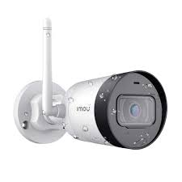
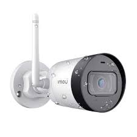

CCTV Camera Installations
CCTV Cameras are security device use for monitoring of valueable assert such as homes, offices and equpment or properties.It provide real live video surviellance and playback recorded video after event occurance. It security importance cannot be limited as it is taking over and changing the face of security.Many has adopted CCTV camera system for their security need as case may be.
There are commonly two types of CCTV Cameras ( Analog and Digital/IP CCTV camera system).
 

Working Priciples of The CCTV Camera System
Analog cameras record onto a DVR, whereas IP cameras process and compress the video and then send it to a video recorder. However, IP cameras require a network video recorder (NVR) or VMS investment, whereas analog cameras need only a DVR. Though both analog and IP cameras face challenges with throughput, many advanced IP cameras have better compression technology, keeping bandwidth low. Analog cameras are a good option for smaller surveillance systems of 5-16 cameras. Therefore, they are best suited for small retail stores, convenience stores, small businesses, or home security camera systems. On the other hand, IP cameras are better for more significant sites with more cameras, such as industrial businesses, construction sites, and large retail locations. IP technology advances continue, leading to new features such as facial detection, video analytics, and appearance search. Meanwhile, analog cameras are stalling in their development and remain a less costly alternative.
Difference Between Analog and IP Camera
The difference between analog and IP security cameras when equipment is concerned is distinct.
Such is due to analog cameras and systems being old generation while digital devices being the current at the time of writing. That detail plays explicitly into the price of each, with analog cameras and their supporting equipment being across the board less expensive than the modern alternative. IP cameras have a higher cost for a
specific reason, they are afforded with more capability than the old generation of cameras. It should also be noted that an IP camera system may be less expensive if it is wireless.
Wireless cameras may be convenient and less costly, they are not as reliable. We implore you to consider that further as we continue on to the next subject. IP cameras typically have quality when compared to analog cameras. How far and with any
amount of clarity a security camera can see is dependent on multiple factors.
We will focus on the not-so-obvious hardware in both cameras called the sensor. Otherwise known as an image sensor, this hardware acts as the eye for all security cameras.It uses the light that naturally flows through the lens before the image is made internally then sent
via analog or digital signal through the connection to the recorder. Depending on your security camera, you could be using a CCD or CMOS sensor. CCD, standing for charge-coupled device, sensors are the most popular sensors for security cameras on the market. Found in both analog and IP cameras, these sensors are complemented by the
camera’s design and benefit from features around it. When focusing on the distinct differences between the two, IP cameras suffer less from noise than analog cameras. Noise, in this case, is the grainy interference found in a given video feed. Due to IP cameras being entirely digital, the produced signal is far better in quality, while the older
alternative uses analog signals that are prone to quality degradation.
Such degradation is particularly crippling when looking at farther-distance objects. CMOS, complementary metal-oxide semiconductors, sensors are the newer type of sensors on the block and are far more capable than the predecessor. However, between the two types of cameras,
only IP cameras feature them. Furthermore, these sensors are sharper, provide more quality, and produce a better resolution but are not nearly as widespread. Comparatively to other electronics, like cellular phones and scientific equipment, the CMOS sensor has displaced the alternative. Such detail is essential when discussing the difference
between analog and IP security cameras because it allows you to understand how images are produced from each.
IP security cameras have superior video footage compared to analog surveillance. Furthermore, newer cameras with CMOS sensors are known to deliver sharper videos with far more pixels than prior generations of
cameras. Meaning IP cameras see at a farther distance with more detail. Resolution difference between analog and IP cameras ranges from 300TVL thermal imaging cameras to 40MP 180-degree panoramic security cameras. With the advances made in today’s imaging sensor technology, high-definition surveillance is cheaper than
ever. Before investing in a potentially expensive surveillance system, there are some things to consider when choosing a resolution.
Defining Resolution
The resolution is defined by the number of pixels in the produced video footage that comes from a security camera. For this point, something to keep in mind is that newer cameras typically have progressively better resolution while older alternatives tend to feature worse results. IP cameras simply have better quality in terms of resolution on a
regular basis. Furthermore, the internet protocol features high definition and 4K options, whereas the alternative does not. Moreover. IP cameras are just as capable when covering more expansive viewing areas as they are with zooming in or specific location viewing. Such detail is essential because these cameras are more capable of capturing
detailed depictions of faces, license plates, events, and more. Such is seen in the license plate recognition security cameras, which see a distinct difference between analog and IP cameras respectively. Such quality plays into the price of both, as mentioned above.
Storage difference between analog and IP cameras Distinctly different from the other
factors, storage is a somewhat different subject to explore that is related to the difference between analog and IP cameras but also has to do with the recorder. Traditionally, both analog and internet protocol produce the video footage and send it to a recorder. Depending on the recorder, it could process the incoming footage and then transfer it to
the surveillance hard drive or just transfer it directly for later viewing and management. As mentioned above, analog uses DVR and IP uses NVR. However, there is a much more significant difference between analog and IP cameras in this regard. Internet protocol cameras are far more capable, producing higher resolution and quality video footage.
Unfortunately, the cost of higher resolution and quality means more space taken up in the hard drive. The same is valid with how much data an IP camera will use, whereas analog cameras feature reduced consumption comparatively. Put simply, the difference between analog and IP cameras where storage is concerned is that internet protocol simply
uses more. Due to more features and better video footage quality, these cameras will require larger hard drives.
Many do also feature an onboard storage option that provides support for those looking for a more lightweight system, but installing without a recorder means relying only on a reduced amount of storage. Analog cameras do not have such
a feature, depending solely on a central DVR. Visibility difference between analog and IP cameras Due to normal sensors having reduced or no performance during low light and nighttime conditions, most newer security cameras are built with sensitive infrared sensors accompanied by external infrared lights around the lens. Especially true
with outdoor security cameras, this technology allows for surveillance even in pitch black conditions or moonless nights where visibility is extremely low, analog security cameras still provide better video footage when surveilling low light or nighttime environments. In a technical sense, this is because analog
security systems are less susceptible to electronic interference and capture movement to a slightly better degree at night when it does not suffer from noise in the recorded footage. However, both tend to be limited to a range of around 50 feet in normal circumstances. This range can be improved with the use of infrared illuminators and proper
lighting.
It should be noted that when placed incorrectly, both will suffer from what is called “ring glare,” which is an issue that causes the internal lights or ring of light to reflect off of the lens. Correct camera placement should remedy this issue, often adjusting the camera alone should fix it when it occurs. Which one is best for you? As shown, the
difference between analog and IP cameras can typically be boiled down to analog being less expensive and internet protocol having more sophisticated features. While regardless, they both inherently come with advantages and disadvantages, either providing their own set as well.
However, to make a fully informed decision when thinking about a
digital security camera vs. analog, it’s important to take many different factors into consideration. This guide explains how factors such as video quality and resolution, networking and power requirements, storage, ease of installation and maintenance, integration with other systems, data security, scalability, and through-life costs should be included
in any evaluation of analog vs. digital cameras or IP security cameras such as fixed IP cameras.
Analog vs. digital camera: Basic differences. Analog cameras are found in video security and access control applications in many different industries. Analog cameras record images and transfer them for analysis and storage via
wired connections, such as through a coaxial cable, to a recording device, normally found in a security center. They require a separate wired power supply. IP systems are widely used in the same applications, and are an increasingly popular choice for many security camera systems. IP technology records images in a similar way, but sends data to a
networked video recorder via the Internet or a local or wide area network (LAN or WAN). Unlike traditional cameras, an IP camera can take its power from the network using power-over-Ethernet (PoE) technology. HD IP NVR vs. DVR analog – the abbreviations and buzzwords can definitely get confusing, but when comparing an IP camera vs analog
camera, image or picture quality is the most important consideration. A security camera needs to provide quality images for analysis and potential evidence in the event of a security breach. So, how do analog cameras vs. IP cameras really compare?Analog camera technology is evolving with high-definition (HD), now capable of up to 4- or 5- megapixel resolution. However, that represents the high end of the range. If you’re choosing between an analog vs IP camera and image resolution is critical for your business, know that the resolution of standard analog cameras is generally lower than their digital counterparts. Analog CCTV cameras do not offer the high resolution video footage that
IP network cameras do.
Furthermore, CCTV analog cameras are not able to capture or detect motion as well as a digital camera.One advantage when considering an IP camera vs. analog is that IP cameras offer higher resolution across the range, with models offering 1.3 to 5 megapixels. IP camera systems also have good motion detection, offering a
higher frame rate than analog cameras. This is important for monitoring areas with high levels of motion or where fine detail such as facial recognition is required for analysis or for intrusion detection. BandwidthImage quality and motion detection can also be affected by the bandwidth available. When planning an installation of a security camera
security system, comparing the bandwidth requirements of IP cameras vs analog cameras is essential. IP cameras such as IP dome or bullet security cameras offer better quality, higher-resolution images than analog camera CCTV versions. However, that increases the bandwidth and storage requirements because file sizes are larger. The network
must have sufficient bandwidth to provide optimum image quality. Coverage When planning a video security system, it’s important to calculate the number of cameras required to provide comprehensive coverage, particularly of high-traffic or high-security areas.
Comparing Digital and Analog Camera Importance
Analog systems may require multiple cameras to cover an area. While analog cameras can incorporate pan, tilt or zoom functionality, there may be a loss of image quality when these functions are used.IP cameras with digital zoom can provide multiple views of
the same areas with no loss of image quality. There are also IP-based solutions that incorporate multiple cameras in the same unit, reducing hardware and wiring costs while optimizing coverage. If the security monitoring team is located a significant distance from the area or building where cameras are installed, it’s important to compare maximum
transmission distances for analog cameras vs. IP cameras. For analog cameras, maximum transmission distances are approximately 300 meters over coax cable and 1.5 kilometers over fiber. Although IP cameras can only send images a shorter distance – around 100 meters – over twisted-pair Ethernet, their ability to send data over the
Internet eliminates distance as a barrier.
That means monitoring stations can be located anywhere with secure Internet access. It also gives security professionals the ability to handle monitoring remotely on mobile devices, increasing convenience and flexibility.Transmission securityIt’s essential to secure images and data on site and in transit to
minimize the risk of security breaches. An IP camera vs an analog camera differ in the levels of security they offer.Video feeds from analog cameras are not encrypted when they are transmitted, increasing the risk of security breaches if the signals are intercepted. There is also a risk of loss through theft of physical components. Signals from IP
cameras such as IP explosion-proof cameras are encrypted at source before transmission via the Internet or a virtual private network (VPN) to maximize security.Data storageFacilities for storing data from cameras must be scalable and accessible.
Apart from its value in analyzing incidents, supporting audits and providing evidence, data must also be retained for specific periods to ensure compliance with client or industry regulations. Regardless of the camera technology – analog camera vs. digital camera – security professionals have the choice of retaining storage onsite or using cloud
storage facilities.
So, digital camera vs analog camera: how do they differ when it comes to storage? Analog cameras traditionally export images and other data to a recording device onsite, which can also store data for retrieval and analysis. Depending on capacity requirements, the data may also be transferred to the cloud or to a data center. IP
cameras can transmit data directly to cloud storage facilities via the Internet. Security professionals can access, download or receive data from the cloud, using a variety of Internet-connected devices, wherever they are located. That makes it possible for security teams to monitor and respond remotely or to share data and collaborate with other
professionals or stakeholders. While security professionals’ initial focus on IP vs. analog cameras is their role in video security applications, camera networks are increasingly integrated with other applications as part of a ‘smart building’ strategy.
For example, camera networks can be integrated with building management or environmental control
systems to improve energy efficiency and costs. Data from camera systems provides valuable information on building or space occupancy, which can be used to automatically adjust environmental factors such as heating, lighting or air conditioning in different zones. IP cameras have the capability to form part of a wider smart solution. They are built
to open standards so that they can be easily integrated with other applications and they are interoperable with other devices. Through-life costs When comparing the through-life costs of analog vs. IP cameras, it’s important to include all cost-related factors. Unit costs depend on the camera model selected and should only be considered as part of the
through-life cost calculation.Analog setup, installation and system expansion costs are higher because of the wiring required for each camera. The cost of coverage can be lower for IP cameras by using their zoom capabilities, installing units with multiple cameras in a single unit or leveraging their wider fields of view compared to adding more analog
cameras to cover the same area.While IP cameras require higher bandwidth than analog models, this is balanced by lower networking and cabling costs. Analog vs. IP camera: Which is right for your business?Security professionals and business owners should take many different factors into consideration when evaluating IP analog cameras for CCTV products to invest in.
With our foregin counterpart(Vivotek, Petek, and Hikvision) providing these devices and support, we carry out the installation, Configuration, Troubleshootings, Repair and Maintenance. We have the technical competency and integrity to efficiently design, undertake and deliver any CCTV camera installation of any kind and magintude.Call on us for your smart security solution at ESAR-Engineering Global.